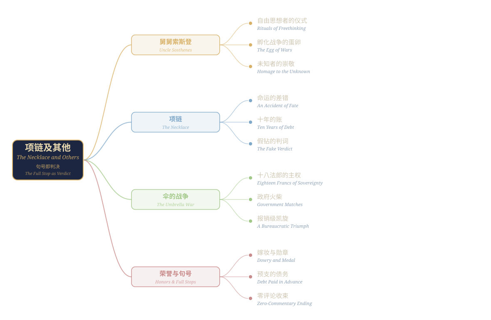

项链及其他
〇 · 书籍信息
基本信息
| 书名 | 《项链及其他》（The Necklace and Others）——收《项链》《伞》《嫁妆》《荣誉勋章》《可恶的面包》《保护人》《那次代价昂贵的骑马》《西奥迪勒·萨博的忏悔》《我的舅舅索斯登》九篇——九个短篇就是九张账单：每一篇都把「体面」折算成现金，再让人付不起 |
|---|---|
| 作者 | 莫泊桑（1850–1893）：福楼拜的弟子，「短篇小说之王」，十年写三百余篇——福楼拜教他的唯一信条：观察，再观察；他把它执行成了手术刀 |
| 结构 | 各篇独立成案，共享同一套「讽判定型」：冷开场（社会位置）→ 热讽刺（欲望或体面的运转）→ 冷结尾（一句反转，句号即判决）——莫泊桑的短篇是欧洲文学的「标准刑式」：三段式，判词永远在最后一句 |
| 体裁 | 现实主义短篇：无心理铺陈、无道德说教，只有行为与账目——他的人物不忏悔，只结账 |
| 一句话 | 她借了一夜的面子，付了十年的自由；还清之后，朋友说：「可是我那一挂是假的，至多值五百法郎！」——人生是多么奇怪，多么变幻无常啊：极细小的一件事可以败坏你，也可以成全你。 |
一 · 核心主题总览
九张账单背后埋着四组母题：① 虚荣的复利（全书引擎）
《项链》：为一场舞会借项链、丢项链、借高利贷买真钻、十年还债——「她一下子显出了英雄气概，毅然决然打定了主意：她要偿还这笔可怕的债务」——莫泊桑最毒的一笔：他让虚荣者以劳动者的尊严还债，最后发现债主（假钻）根本不存在。
② 小市民的经济学
《伞》：奥雷依太太为一把烧坏的伞与保险公司展开「十八法郎战争」——「五百法郎的损失是奥雷依先生自己掏腰包，而十八法郎的损失却要动到我奥雷依太太的口袋，这可是两码事」——莫泊桑发现了经济学的平方根：金额越小，战争越烈。
③ 荣誉的账本
《荣誉勋章》《嫁妆》：勋章是可继承的虚荣，嫁妆是可变现的爱情——莫泊桑反复审计同一张表：社会荣誉=债务的别名；凡是写在证书上的，最后都要用人生来兑付。
④ 自由思想的讽刺
《我的舅舅索斯登》：反宗教的舅舅把「无信仰」过成了最虔诚的信仰——「爱国主义就是一种宗教，它是一枚能够孵化出战争的蛋卵」——叙述者对舅舅的嘲讽，句句命中所有的狂热。
二 · 第一段 舅舅索斯登—— 自由思想 · 蛋卵 · 反宗教的宗教 ——
自由思想者的仪式
「我的舅舅索斯登是一个自由思想者——纯粹出于愚笨无知；人们信仰宗教往往也是这样。」他见神父就挥拳，转背却摸一块铁器避邪——莫泊桑的第一句就完成了人设：无信仰与信仰共享同一套心理机制，反信仰只是换了祭坛的信仰。侄子（叙述者）建议把教堂改装望远镜与显微镜——「拜神场所象征着人们对未知者的崇敬」：这句定义放在今天依然是科学传播的最佳文案。
◆ 语言学习 · 开篇 · 讽刺
| freethinker /ˈfriːθɪŋkə/ | n. 自由思想者 —— 例句：My Uncle Sosthenes was a Freethinker。十九世纪关键词：反教权的世俗派；freethinking n. |
|---|---|
| superstition /ˌsuːpəˈstɪʃn/ | n. 迷信 —— 摸铁器避邪的行为定性：superstitious adj.；反迷信者的迷信最顽固：莫泊桑的对称律 |
| dogma /ˈdɒɡmə/ | n. 教条 —— 例句：the dogmas which invented the fear of death。神学与政治通用词；dogmatic adj. 教条化的 |
| homage /ˈhɒmɪdʒ/ | n. 崇敬，致敬 —— 例句：the homage paid by man to the unknown（拜神场所的定义）。pay homage to 固定搭配 |
句型 ｜ 「…when beliefs are unreasonable one should have all or none at all.」——all or none 的对偶判词：莫泊桑的讽刺句偏爱「二选一」结构：把中间地带抽掉，人物的荒诞立刻显形。
孵化战争的蛋卵
舅舅是爱国主义者与共济会会员；侄子偏偏是个「不爱国的人」——理由是全书最锋利的一句话：「爱国主义就是一种宗教，它是一枚能够孵化出战争的蛋卵。」两人互相辩论又互相搀扶——莫泊桑写家庭辩论的模型：观点对立，餐桌统一——讽刺的最高形态不是争吵，是亲戚。
◆ 语言学习 · 辩论 · 亲戚
| patriotism /ˈpætriətɪzəm/ | n. 爱国主义 —— 例句：patriotism is a kind of religion。patriot n.；patriotic adj.——莫泊桑给它配的动词是 hatch |
|---|---|
| hatch /hætʃ/ | v. 孵化 —— 例句：the egg from which wars are hatched。hatch 也有「密谋」义（hatch a plot）——一个动词连接鸡窝与战争策源地 |
| mason /ˈmeɪsn/ | n. 石匠；共济会会员 —— 例句：a Freemason（舅舅的身份）。Freemasonry 共济会：十九世纪世俗组织的代表 |
| irony /ˈaɪrəni/ | n. 反讽 —— 莫泊桑的修辞母语：ironic adj.；反讽的本质是「让结构自己打脸」 |
习语 ｜ hatch a war 孵化一场战争——莫泊桑自造的搭配：战争不是宣战的，是孵的；do unto others（己所不欲勿施于人）——连共济会的宗旨都被他顺手做了幽默审计：「唯一的区别存在于挠手心」。
三 · 第二段 项链 · 十年的账—— 舞会 · 高利贷 · 假钻 ——
命运的差错与舞会
「她也是一个美丽动人的姑娘，好像由于命运的差错，生在一个小职员的家里。」玛蒂尔德嫁给小书记员，一生唯一的奢侈品是幻想；教育部舞会的请柬到了，她借来一挂钻石项链，一夜惊艳全场。莫泊桑的开场是社会学判词：美貌与出身错位——「命运的差错」四个字，替全篇所有悲剧盖了章。
◆ 语言学习 · 开场 · 请柬
| modest /ˈmɒdɪst/ | adj. 寒素的，微薄的 —— 例句：modest surroundings（她的处境）。modest 一词两面：谦逊与寒酸共用——英语的阶级感藏在形容词里 |
|---|---|
| invitation /ˌɪnvɪˈteɪʃn/ | n. 请柬 —— 例句：an invitation to the ball。请柬=本书的灾难入口：灾难的文体通常是纸质的 |
| jewellery /ˈdʒuːəlri/ | n. 珠宝 —— 英式拼写（美式 jewelry）：jewel 首饰单件；项链是可借出的体面：体面的租赁市场 |
| envy /ˈenvi/ | n./v. 羡慕，嫉妒 —— 玛蒂尔德的原生情绪：envious adj.； envy 与 admiration 在莫泊桑笔下只隔一个夜晚 |
句型 ｜ 「She was one of those pretty and charming girls born, as if by an accident of fate, into a family of clerks.」——as if by an accident of fate 插入语：莫泊桑的冷开场公式：用「命运的差错」宣布制度有罪——然后让制度看着她受刑。
假钻的结尾
归途项链丢失。夫妇俩借高利贷买回一挂三万六千法郎的真钻还给朋友，然后开始十年还债：搬阁楼、做杂役、讨价还价、两手起茧——「她一下子显出了英雄气概，毅然决然打定了主意」——莫泊桑把最高的敬意给了虚荣者：劳动把她还成了人。十年后债清人老，公园偶遇故人，她笑着说出一夜的代价；故人惊答：「哎哟！我可怜的玛蒂尔德！可是我那一挂是假的，至多值五百法郎！……」——全书到此为止：一句判词，零条评论。
◆ 语言学习 · 还债 · 反转
| installment /ɪnˈstɔːlmənt/ | n. 分期付款 —— 例句：pay by installments（十年还债）。分期词族：财务英语的入门课 |
|---|---|
| usurer /ˈjuːʒərə/ | n. 放高利贷者 —— 债主的名册：usury 高利贷——莫泊桑把金融词写成了惊悚词 |
| worn-out /ˌwɔːn ˈaʊt/ | adj. 磨损的，憔悴的 —— 例句：worn-out hands（十年后的双手）。wear out 短语：人被生活磨旧了，动词与首饰共用 |
| genuine /ˈdʒenjuɪn/ | adj. 真的（钻石）—— 例句：genuine diamonds（假钻的镜像词）。fake/genuine 对子：全篇的价值系统建立在这对反义词上 |
习语 ｜ pay off the debt 还清债务——十年劳作的财务总结；what a strange life!（人生是多么奇怪啊）——莫泊桑的感叹永远放在判词前半句：先惊呼，再定罪——情绪与判决共用一句话。
四 · 第三段 伞与火柴的战争—— 十八法郎 · 保险柜 · 政府火柴 ——
十八法郎的主权
奥雷依先生的伞被火烧出洞，太太去公司要求报销；经理指出「五百法郎的损失都不索赔，却为一把伞要五六个法郎的修理费」，太太的答辩成了全书最经典的经济学台词：「五百法郎的损失是他自己掏腰包，而十八法郎的损失却要动到我奥雷依太太的口袋，这可是两码事。」莫泊桑发现了「份额经济学」：人对自己钱包的主权感，随金额变小而指数上升——十八法郎的战争比五百法郎的沉默更凶猛。
◆ 语言学习 · 报销 · 主权
| compensation /ˌkɒmpenˈseɪʃn/ | n. 赔偿 —— 例句：claim compensation（报销战争）。claim v. 索赔；保险词族：现代体面的售后部门 |
|---|---|
| damages /ˈdæmɪdʒɪz/ | n. 损害赔偿金 —— 例句：estimate the damage（经理的问句）。damage 单复数异义：复数=赔偿金 |
| pocket /ˈpɒkɪt/ | n. 口袋，钱包 —— 例句：M. Oreille's pocket（太太的名言）。「谁的口袋」是十九世纪家庭财务的边界线 |
| resignedly /rɪˈzaɪnɪdli/ | adv. 无可奈何地 —— 例句：said resignedly（经理的屈服）。resign 一词三义（辞职/听任/屈服）——体面机构的最后表情 |
句型 ｜ 「…the five hundred francs affected M. Oreille's pocket, whereas this damage… concerns Mme. Oreille's pocket only, which is a totally different matter.」——whereas 对比 + which 收尾：莫泊桑的官僚喜剧句式：用最庄严的连接词，说最鸡毛蒜皮的事——落差即笑点，笑点即控诉。
政府制造的火柴
太太细述事故经过：擦了三根火柴都没着，第四根才点燃蜡烛；经理冷冷插一句玩笑：「这么说，这一定是政府制造的火柴了？」——官营劣货的梗贯穿全篇。她胜诉了：公司答应赔修伞钱；回家路上她仍不满意金额。莫泊桑的收束：战争没有赢家，只有预算——小市民的体面，是十八法郎就能引爆的火药库。
◆ 语言学习 · 火柴 · 收束
| strike a match | phr. 擦火柴 —— 例句：struck one, but it missed fire。miss fire=「不发火」：军事词的民用化：连火柴都在开小差 |
|---|---|
| ignition? →(改) melt? →(改) extinguish? →(改) scorched /skɔːtʃt/ | adj. 烧焦的 —— 例句：the scorched folds（伞的伤口）。scorch 与 burn 辨析：scorch=轻灼——伤情鉴定决定赔偿等级 |
| bureau /ˈbjʊərəʊ/ | n. 局，办事处 —— 例句：the insurance bureau。官僚机构词族：bureaucracy 官僚主义——伞的战争打在两个 bureau 之间 |
| victory /ˈvɪktəri/ | n. 胜利 —— 例句：she felt that she had won the victory。莫泊桑的反讽：小市民的胜利永远是「报销级别的凯旋」 |
习语 ｜ government matches 政府制造的火柴——十九世纪的官营劣货梗：制度性幽默的百年样本：劣质品背后永远站着一个衙门。
五 · 第四段 荣誉的账本与句号—— 嫁妆 · 勋章 · 判词 ——
嫁妆与勋章
《嫁妆》：丈夫携妻子的嫁妆清单一笔笔投资，最终连人带钱一起出事——爱情被写成一份资产负债表；莫泊桑的审计结论：凡是能继承的、能变现的，都不是感情。《荣誉勋章》：一场勋章梦耗尽一个体面人的一生——证书上的荣誉是预支的债务：领奖那天开始计息。
◆ 语言学习 · 荣誉 · 账本
| dowry /ˈdaʊəri/ | n. 嫁妆 —— 例句：The Dowry（篇名）。婚产制度词：嫁妆=爱情的抵押品：抵押品多了，爱情就空了 |
|---|---|
| medal /ˈmedl/ | n. 勋章 —— 例句：The Legion of Honor（荣誉勋章）。decoration 勋衔：荣誉的官方计量单位 |
| legacy /ˈleɡəsi/ | n. 遗产，遗留 —— 例句：a legacy of debts。legacy 的双义：馈赠与遗留——莫泊桑永远选第二个意思 |
| vanity /ˈvænəti/ | n. 虚荣 —— 全书的总罪名：vain adj.；in vain 徒劳——三个 vain 押着同一个韵：虚荣的尽头是徒劳 |
句型 ｜ 「…it is the egg from which wars are hatched.」——from which 定语从句做「孵化器」：莫泊桑的判词偏爱「过程名词」：战争不是打的，是孵的；荣誉不是挣的，是欠的——动词一换，制度显形。
结尾句号学
九篇故事的结尾共享一条语法：判词由「他人之口」说出（玛蒂尔德的朋友、保险经理、流浪汉式的旁观者），叙述者本人零评论。这就是「莫泊桑句号学」：故事在真相揭示的瞬间戛然而止——句号是刑具，读者是刑场。与契诃夫的开放结尾、欧·亨利的机械反转相比，莫泊桑的反转永远长在社会病灶上：反转即诊断。这套朴素精确来自福楼拜的家教：观察，再观察，用最准的词。
◆ 语言学习 · 句号 · 判决
| climax /ˈklaɪmæks/ | n. 高潮 —— 例句：the climax comes in the last line。莫泊桑把高潮从故事中段挪到最后一句：短篇的「延迟炸弹」结构 |
|---|---|
| twist /twɪst/ | n. 反转 —— 例句：an O. Henry twist（对照术语）。twist 原义「拧」：反转=把结局拧向另一面 |
| epiphany? →(改) revelation /ˌrevəˈleɪʃn/ | n. 揭示 —— 例句：the revelation of the fake necklace。reveal v. 揭示：揭示的词源是「掀开面纱」——面纱下面是账单 |
| closure /ˈkləʊʒə/ | n. 收束 —— 例句：a story of perfect closure。close/close v. 同源：句号学=把人生「关账」的技术 |
习语 ｜ end with a bang 以巨响收尾——短篇写作的口诀；show, don't tell 展示而非陈述——莫泊桑是这条箴言的十九世纪执行者：他从不 tell，他只把真相 show 在最后一行。
六 · 人物图鉴与成长弧线—— 主角配角 · 一张表看穿 ——
主要人物
玛蒂尔德 Mathilde Loisel——《项链》主角：小职员的美丽妻子。弧线：幻想者 → 舞会的王后 → 丢失者 → 十年劳动者 → 老于年龄的妇人。莫泊桑给她唯一的救赎通道是劳动：虚荣者以劳动者的尊严还债——这是他笔下最复杂的一次致敬。
奥雷依太太 Mme Oreille——《伞》主角：精算到法郎的家庭财务主管。她的名言（「两码事」）是全书最真实的经济学论文：人对小额损失的主权感最大——莫泊桑用她完成了对小市民心理的显微手术。
索斯登舅舅 Uncle Sosthenes——《我的舅舅索斯登》主角：挥拳的反宗教者、摸铁的避邪者。他把「无信仰」过成了最虔诚的信仰——莫泊桑的第一个论点：反崇拜只是崇拜的镜像。
叙述者（侄子）——索斯登篇的说话人：冷静、疏离、句句带刺。他是莫泊桑的镜子位：读者通过他学会「如何礼貌地解剖亲戚」。
次要人物（功能位）
| 佛来思节夫人 Mme Forestier | 项链的真主：借出假钻、归还真钻、最后说出真相——她是全书最无痛的债权人：她连利息都没算，就毁掉了别人十年 |
|---|---|
| 路瓦栽先生 M. Loisel | 玛蒂尔德的丈夫：拿出养老金陪她买真钻——全书唯一的无怨者：莫泊桑的同情都给了沉默的付账人 |
| 保险经理 | 《伞》的对手戏：从拒绝到「甘心赔款」——体面机构的完整变形记：程序—推诿—玩笑—屈服 |
| 社会（作为角色） | 九篇共同的被告：它不露面、不发言、不判刑——它只负责让每个人为体面付账 |
七 · 主题与象征—— 每个道具都在说话 ——
| 假钻 ↔ 体面的真实成色 | 真价五百法郎的赝品：全书的价值系统建立在这一对反义词上——体面本身就是赝品 |
|---|---|
| 伞 ↔ 小市民的领地 | 十八法郎的主权战争：金额越小，战争越烈——份额经济学的故事版 |
| 蛋卵 ↔ 战争的孵化器 | 爱国主义的宗教定性：狂热不是宣战的，是孵的——过程动词的判决力 |
| 火柴 ↔ 制度性幽默 | 「政府制造的火柴」：劣质品背后永远站着一个衙门——十九世纪的百年梗 |
| 句号 ↔ 刑具 | 判词在最后一行、零评论收束：莫泊桑句号学：句号是刑具，读者是刑场 |
八 · 写作手法赏析—— 怎么写，就能怎么学 ——
① 冷开场判词
「命运的差错」开场：用一句话宣布制度有罪，然后让制度看着她受刑。
② 延迟炸弹
高潮挪到最后一句：短篇的「句号即判决」结构——九篇九炸，无一失手。
③ 他人之口收束
真相由配角说出：叙述者零评论：把道德判断的工作量全部转嫁给读者——这是现代短篇的起点。
④ 份额经济学
金额与战争烈度成反比：《伞》是社会心理学的先声：小额损失的战争最凶猛。
⑤ 对称律讽刺
反信仰=信仰的镜像：莫泊桑的讽刺不用形容词，用对称结构——让结构自己打脸。
九 · 名段欣赏—— 原文精读 · 逐段赏析 ——
十 · 金句摘录—— 14 条 · 中英对照 · 带出处 ——
"要是那时候没有丢掉那挂项链，她现在是怎样一个境况呢？谁知道呢？谁知道呢？"—— 项链 · 结尾前
"人生是多么奇怪，多么变幻无常啊！极细小的一件事可以败坏你，也可以成全你。"—— 项链 · 公认中译
"哎哟！我可怜的玛蒂尔德！可是我那一挂是假的，至多值五百法郎！"—— 项链 · 结尾
"…patriotism is a kind of religion; it is the egg from which wars are hatched."爱国主义就是一种宗教，它是一枚能够孵化出战争的蛋卵。—— 我的舅舅索斯登
"My Uncle Sosthenes was a Freethinker… from pure stupidity; people are very often religious in the same way."我的舅舅索斯登是一个自由思想者——纯粹出于愚笨无知；人们信仰宗教往往也是这样。—— 开篇
"五百法郎的损失是他自己掏腰包，而十八法郎的损失却要动到我太太的口袋，这可是两码事。"—— 伞 · 经典对答
"拜神场所象征着人们对未知者的崇敬。"—— 索斯登 · 叙述者
"如果我们一定要有什么宗教的话，老的就足够了。"—— 索斯登 · 反讽
"她也是一个美丽动人的姑娘，好像由于命运的差错，生在一个小职员的家里。"—— 项链 · 开场
"她一下子显出了英雄气概，毅然决然打定了主意。她要偿还这笔可怕的债务。"—— 项链 · 还债
"我擦了第三根火柴，还是那样。"—— 伞 · 事故陈述
"这么说，这一定是政府制造的火柴了？"—— 伞 · 经理的玩笑
"你看看它被火烧成什么样了。"—— 伞 · 举证
"Do unto others as ye would they should do unto you."己所不欲，勿施于人。—— 索斯登 · 共济会宗旨
十一 · 拓展阅读—— 原文 · 词条 · 译文 ——
原文与文本
- The Necklace and Other Stories — Project Gutenberg —— 莫泊桑短篇公版英译；与外研社双语对照精读
- The Necklace — Wikipedia —— 《项链》文本、教材收录与改编史
作者与谱系
- Guy de Maupassant — Wikipedia —— 福楼拜弟子、三百余篇短篇与「观察者」创作观
- Twist ending — Wikipedia —— 反转结尾的技术谱系：莫泊桑 vs 欧·亨利 vs 契诃夫
十二 · 个人感悟与心得—— 三点心得 ——
蛋卵 · 两码事 · 句号
《项链》真正的深度不在「反转」，在「还债的十年」：莫泊桑把最高的敬意给了虚荣者——劳动把她还成了人。这个故事常被读成「虚荣的教训」，其实它是一篇关于「劳动尊严」的赞歌，只是赞歌的最后一句是判词。 「莫泊桑句号学」是短篇写作的第一课：判词由他人之口说出，叙述者零评论，句号即刑具。把道德判断的工作量全部转嫁给读者——这不是偷懒，这是现代短篇的定义：契诃夫与海明威都从这里出发。 从英文学习看，莫泊桑的转译文本是「朴素精确」的典范：动词准、从句少、每句可仿写——一天一篇的效率冠冕：九篇读完，你会拥有第一批真正属于你的英语叙事句子。—— 莫泊桑一生没结过婚，却写过三百场婚礼与葬礼。（他死于 1893 年，诊断书上写的还是那个词：consumption。）
十三 · 一页速查（复习用）
| 全书骨架 | 9 篇独立成案：项链 · 伞 · 嫁妆 · 荣誉勋章 · 可恶的面包 · 保护人 · 代价昂贵的骑马 · 萨博的忏悔 · 我的舅舅索斯登 |
|---|---|
| 核心命题 | 句号即判决；金额越小，战争越烈；反信仰只是信仰的镜像 |
| 必背表达 | twist ending / pay off the debt / claim compensation / hatch a war / show, don't tell / as if by an accident of fate |
| 三大符号 | 假钻（体面的成色）· 蛋卵（战争的孵化器）· 句号（刑具） |
| 一句话总结 | 他的人物不忏悔，只结账——反转永远长在社会病灶上 |
十四 · 全书思维导图—— 一图纵览 ——

一图纵览全书骨架 · 中英双语对照 · 手机端可左右滑动查看全图